剔除锐方向：用曲率修复激活引导
作者提出steering Hessian，发现CAA中仅1–5%能量的锐方向会导致反向引导，减去该分量可提升生成。
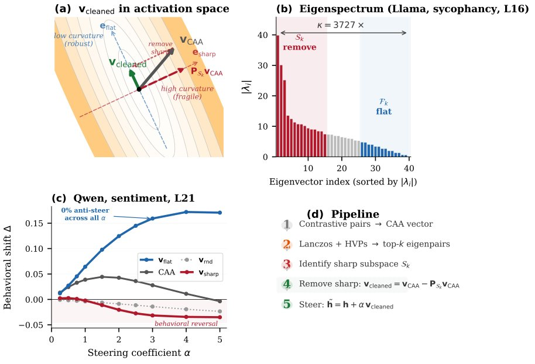
图1：steering Hessian框架概览——激活空间中的行为损失呈各向异性，CAA向量含少量锐方向分量，剔除后得到避开高曲率区的v_cleaned；Llama-3.1-8B第16层真实谱跨三个数量级（κ=3,727）。
解决了什么问题。对比激活加法（CAA）是常用的免训练行为控制方法，但它在不少输入上会把行为推向相反方向，且对引导系数敏感。作者指出，这类失败此前多被当作经验性问题，缺少几何解释。
方法。作者将行为损失对引导向量求二阶导，定义steering Hessian，并用Lanczos迭代估计顶部特征向量，得到高曲率的锐子空间。随后把CAA向量投影到该子空间并减去其分量，得到v_cleaned，即sharp removal；单层Hessian约40秒，全流程不到2分钟。
关键结果。在3个模型、4个任务、36个token级条件下，steering Hessian条件数为50–3,727；沿顶部锐方向引导在36/36条件中反向，anti-steer率53–100%。锐方向仅占CAA平方范数的1–5%，剔除后余弦相似度>0.974、范数下降<3%，方向曲率降低1.7–12×（中位数4×）。生成层面，sharp removal在25/25条件优于CAA；拒绝任务中CAA把Qwen拒绝率从78%降到36–44%、Llama从62%降到24–52%，sharp removal恢复到Qwen 88–98%、Llama 74–76%。
为什么值得看。这项工作把激活引导的失败归因于激活空间曲率各向异性，并给出无需训练的一行后处理，可作为现有引导向量的通用清理步骤。锐方向还能在没有对抗优化的情况下暴露削弱安全对齐的方向，因此sharp energy fraction有潜力作为引导向量的安全审计指标。
局限 / 存疑。局限在于steering Hessian是(v_CAA, α=1.0)处的局部二次近似，大α下高阶项可能主导；实验只覆盖4个任务和3个7–8B指令模型，估计子空间在分布偏移下是否迁移仍未知。
模型可解释性、模型内部机制
alphaXiv · arXiv
DNAlign：在零空间里做安全对齐
DNAlign 把 LLM 建模为动态系统，用零空间投影隔开安全干预与预训练知识，宣称在 7B 模型上同时提升安全奖励与
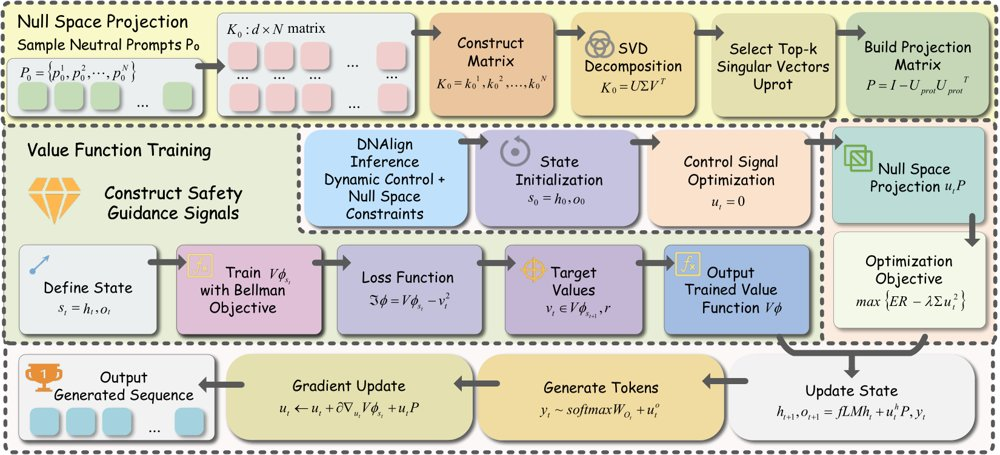
DNAlign 流程：先从输入提示算出初始状态 s0，再加载离线预计算的零空间投影矩阵 P，把梯度优化得到的控制信号 u_t 投影到零空间后更新系统状态，并据此采样下一个 token。
解决了什么问题。现有安全对齐路线各有代价：RLHF、DPO 需要大量人工标注并可能过拟合特定场景，测试时的提示工程与受控解码又不够稳健，动态干预还常在良性任务上损伤流畅度和事实性。核心难题是安全与效用之间的权衡：既要压住有害输出，又不想动模型已学到的中性知识。
方法。作者把 LLM 的逐 token 生成写成离散时间动态系统，状态由各层 KV 缓存和最终层 pre-logit 向量组成，再用梯度上升优化一个瞬态控制信号来提升安全奖励。关键一步是用 SHP 中性提示的最终层隐藏状态做 SVD，构建零空间投影矩阵 P，把控制信号投影到与中性知识子空间正交的方向，理论上避免扰动中性知识。价值函数是 3 层 MLP，在 HH-RLHF 数据上、以 UltraRM-13B 的奖励作为监督训练得到；推理时每个 token 做 100 次梯度上升，投影矩阵离线预计算，加载开销低于总推理时间的 0.1%。
关键结果。在 Vicuna-7B 的 HH-RLHF 上平均奖励为 1.2258，高于 RE-Control 的 0.9614；Qwen-7B 上从基线 0.7218 升到 0.9430。外部有害集上，RealToxicityPrompts 的平均奖励由基线 0.3374 升到 0.7999，论文报告提升 137.1%；ToxiGen 上达到 0.5465，报告提升 229.4%。效率上，Qwen-7B、1000 条样本单 batch 推理需 123.734 分钟，基线为 51.059 分钟；10 个 batch 时降到 12.447 分钟，基线为 10.556 分钟。投影矩阵构建用 20000 条样本，误差稳定在 0.0094。
为什么值得看。若结论成立，这是一条不改权重、在推理时即插即用的对齐路径，对开源模型的安全部署和“安全干预不伤知识”的工程需求有直接参考价值。
局限 / 存疑。评测主要依赖自动指标：TF-IDF 余弦相似度、UltraRM-13B 奖励和 DeepSeek-R1-Distill-Qwen-32B 打分，缺人工评测，且只验证了 7B 规模骨干。单 batch 推理时间约为基线的 2.4 倍，部分数据集上综合质量还略低于未编辑基线，作者也承认零空间约束是“近似”保护而非严格保证。
基础大模型 & 基础模型底层研究
模型可解释性、模型内部机制
alphaXiv · arXiv
综述：用世界模型视角统一视频理解与生成
综述提出以世界模型为统一视角，用读、写、共享、交互四种操作梳理视频理解与生成，并重新界定评测标准。
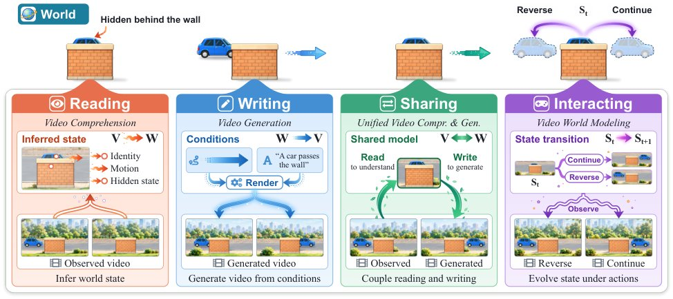
原文未给出图注；图 2 把四类操作展开为并行的研究分支，并列出各章考察的代表性工作。
解决了什么问题。视频基础模型在理解与生成视觉序列上进展迅速，视频世界模型则试图刻画视频所描绘世界的底层动力学。两者目标不同，但都涉及视频观测与不断演变的世界之间的关系，此前文献往往分头叙述。
方法。该综述把世界建模作为统一透镜，将一段观测到的视频视为某个潜在时序世界的部分、有损、按时间排列的投影。围绕这一视角，作者把文献组织为四种互补操作：reading（从视频推断世界属性）、writing（按指定或学到的世界条件合成视频）、sharing（用共同建模机制打通理解与生成）、interacting（在动作与演化观测下预测并更新世界状态）。
关键结果。这是综述文章，论文未给出具体数字或实验结果；其组织方式是「读、写、共享、交互」四类操作，并以 2×3 的网格（原文图 10、第 8 节）逐格汇总各研究分支的代表性工作，同时给出表 2 作为「更强证据」的评测要求清单。作者据此指出，领域重心正从片段级识别与感知保真度，转向持久状态、可控演化、物理与因果有效性，以及基于交互和下游决策的评测。
为什么值得看。它明确区分了「观测或生成序列的时间连贯性」与「底层世界状态的一致性」，把评价焦点从画面是否逼真推向模型是否真的跟踪世界状态。这对需要闭环决策与规划的下游使用尤为关键。
局限 / 存疑。作为综述，文章提出的是概念框架与评测建议，本身不含新实验，四类操作与 2×3 网格的划分是作者主张，覆盖面和可操作性仍需实证检验。文中也提到 Gemini 这类闭源系统虽展示了强长上下文视频与音频结果，但公开的设计细节很少，相关比较难以深入。
基础大模型 & 基础模型底层研究
生成式 AI
计算机视觉 CV
alphaXiv · arXiv
Softmax 与交叉熵的两个数值 bug 及修复
DeepMind 作者指出标准 softmax 与交叉熵存在两个数值缺陷，并给出可直接替换的对数空间实现。
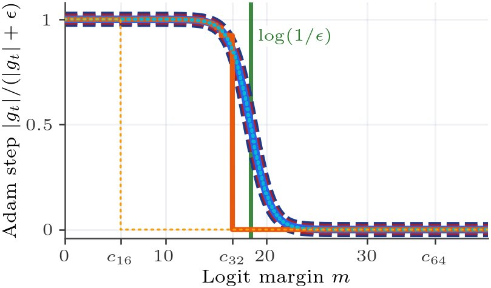
在 ε=10⁻⁸ 下，归一化 Adam 步长与 logit margin 的关系：修复版在 margin 约 18.4（即 log(1/ε)）附近平滑衰减，而标准交叉熵在 bf16 的 5.5 与 fp32 的 16.6 处直接把目标梯度归零。
解决了什么问题。标准实现先把 logit 减去最大值再取指数，虽然避免了溢出，却留下两个数值 bug。其一是 Softmax Collapse：当目标 logit 远大于其他 logit 时，目标梯度会被舍入为零，而非目标梯度仍为正，导致梯度之和不再为零。其二是 Softmax Cancellation：在软标签蒸馏中，学生与教师 logit 接近时，分别计算两个 softmax 再相减会损失精度，即使两者相等也留下非零梯度。
方法。作者把 log-softmax 与交叉熵改写成在对数空间中计算：不再把 e^{-m} 加到 1.0 上，而是用 softplus(-m) 表示损失，并把目标类从 log-sum-exp 中排除，让目标梯度由非目标梯度取负求和得到。针对软标签蒸馏，则直接用学生的 logit 与学生和教师 logit 之差 δ 构造 log(q/p)，并借助 expm1、log1p 计算 q−p，最后减去均值以保证梯度之和为零。论文给出了 JAX 实现，并称不改变精度，也就是不内部提升到 fp64。
关键结果。论文给出的精度悬崖为 bf16 约 5.5、fp32 约 16.6、fp64 约 36.7，一旦 logit margin 超过对应阈值，标准实现就会把目标梯度舍入为零。修复后 margin 能平滑越过这些悬崖，并在 AdamW 加权重衰减时停在 ε 决定的平衡点 log(1/ε)：ε=10⁻⁸ 时约 18.4，ε=10⁻¹² 约 27.6，ε=10⁻¹⁶ 约 36.8。在 a+b mod 31（λ=1，ε=10⁻⁸）上，标准交叉熵为 94.3±5.4% 测试准确率，修复版为 100.0±0.0%；bf16 下分别为 93.3±7.4% 与 100.0±0.1%。在 a²+b² mod 97（λ=0）上，标准交叉熵在约第 1250 步 margin 触及 16.6 时出现一次尖峰，测试准确率从 61% 掉到 23%，而修复版继续平滑升到 85%；a³+b mod 97 上则是从 60% 掉到 21%。蒸馏实验中，教师权重初始化学生、T=4、ε=10⁻⁸ 时，修复版在 bf16、fp32、fp64 下都保持在 KL=0 与 100% 准确率，标准版在 bf16 下会把约 10⁻³ 的残差梯度放大成参数漂移。
为什么值得看。这两个 bug 是库级实现问题，而不是模型设计问题，修复只需替换几个算子就能消除 grokking 中的 Slingshot 尖峰、避免无权重衰减时的准确率崩塌，并让蒸馏中的学生不再被舍入噪声推离教师。论文还给出 margin 收敛到 log(1/ε) 的解析解释，把 Adam 的 ε 从“数值防零小量”提升为控制 logit 增长的实际超参数。
局限 / 存疑。实验集中在模运算 grokking 基准上的 1 层 Transformer 与 2 层 MLP，论文本身也承认如此大的 margin 与如此接近的师生 logit 差距在大规模常规训练中并不常见，方法在真实大模型上的收益尚未验证。此外，margin 平衡点的推导依赖权重衰减与 Adam 平稳点假设，且需要用 LaProp 并直接更新 v 才能覆盖 ε→0 的极端情形。
基础大模型 & 基础模型底层研究
alphaXiv · arXiv
3D场景流成为机器人的第三模态
上交MVIG与上海创智学院等提出UniFlowWAM，把场景级3D流当作与视觉、动作并列的模态，放进同一个扩散Trans
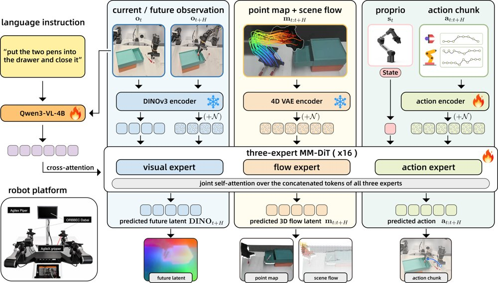
网络架构：动作、场景级3D流与未来视觉特征分属三个专家，仅在联合自注意力中交互，由训练目标决定谁是被加噪的预测目标、谁是干净条件，预测出的流latent再由4D VAE解码为点图与场景流。
解决了什么问题。机器人示教只记录「看到了什么」和「做了什么」，却不记录三维场景在这两者之间如何位移：目标图像给出末态而非过程，视频捕捉外观却不描述场景点在3D中怎么移动。此前工作把3D流当作独立模块、推理期注入的先验或额外的预测头，流始终留在策略之外。
方法。作者在LDA视觉-动作骨干上为3D流新增一个独立专家，三个专家各自保留归一化、Q/K/V投影与前馈网络，只通过联合自注意力交换信息，并用MM-RoPE把动作、流、视觉token统一到同一时空坐标系。训练使用10个「角色网格」目标，每个目标给三种模态分别指定target、condition或absent，使同一模型同时充当策略、前向/逆动力学与未来状态预测器。流由Track4World离线提取、经冻结的MotionCrafter 4D VAE编码为latent；部署时走直接策略目标，流槽位填学习到的占位符，无需提取流。
关键结果。在RoboCasa-GR1的11个共享评测种子上，带mid-training的UniFlowWAM把成功率从LDA的52.11%提到56.38%（+4.27点），在基线低于50%的10个任务上平均提升6.47点。LIBERO保持98.05%，LIBERO-Plus零样本达87.65%，相机扰动下为96.9%，而该类别最强基线为76.6%。真实ALOHA双臂平台上平均成功率87.0%、过程分92.3，π0.5为68.5%和77.0。真机消融中，全目标网格相对仅策略训练在每个任务高12到18点（如毛巾折叠84%对72%）。
为什么值得看。它给出了一条把几何世界表示内化进策略、而非外挂成模块的可行路线，且推理时不依赖流输入，不增加部署开销。对做世界-动作模型的人来说，这种「多模态角色网格」的训练组织方式可以直接迁移到其他感知模态。
局限 / 存疑。3D流标签是Track4World从单目视频生成的伪标签，论文自己承认可能存在流动方向反转一类的时间不一致；流mid-training只用了约1200小时示教，远少于LDA预训练所用的EI-30k，新加的流专家从零训练，未与骨干同规模预训练。此外RoboCasa上的绝对提升有限，表中OpenWAM-α公布值为60.5%，高于本文跨种子最好成绩58.9%，而LIBERO已接近饱和，作者也称该基准上1个百分点的差异不具信息量。
基础大模型 & 基础模型底层研究
计算机视觉 CV
机器人 & 具身智能
alphaXiv · arXiv
AW-0：代码规划接入世界动作模型
AW-0 以代码、视频、动作三专家联合去噪，在 RoboTwin 2.0 平均成功率 50.7%，随机场景混合执行达 2
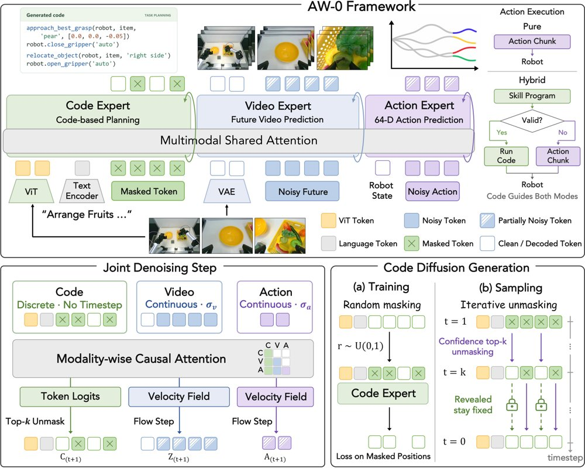
框架以混合 Transformer 为主干，代码、视频、动作三个专家联合去噪，其中视频和动作采用连续流匹配，代码采用离散掩码扩散。
解决了什么问题。近期的世界动作模型能预测视觉未来并生成动作，却缺少组合式技能复用的显式机制；agentic robotics 能用代码规划调用可复用技能，却常缺少对物理动力学的预测基础。AW-0 试图把程序化规划与预测性世界模型接起来。
方法。AW-0 采用 Mixture-of-Transformers 主干，代码、视频、动作三个专家联合去噪：视频与动作走连续流匹配，代码走离散掩码扩散。自动化标注管线从大规模机器人与人类演示中学习规划接口；推理时可在默认模式与基于 CaP 程序的混合执行间切换。
关键结果。在 RoboTwin 2.0 上，AW-0 跨干净与随机两种设置的平均成功率为 50.7%，高于所有基线。干净设置达 80.8%，比最强基线 WLA 的 64.8% 高 16.0 个百分点；随机设置降到 20.6%，低于 π0.5 的 27.7%，但高于 DreamZero 的 17.6%、EgoScale 的 2.9% 和 WLA 的 3.6%。混合执行把随机设置提升到 29.2%，超过 π0.5 的 27.7%，并保留干净设置的 46%，默认模式仅保留 25%；代价是干净设置降至 63.1%，比默认模式低 17.7 个百分点。真实实验覆盖 2 种 embodiment 的 8 个任务，每任务用 100 条演示、3×16 次 rollout 评估，但材料未给出真实任务的具体分数。
为什么值得看。把程序化规划、世界预测与底层控制放进同一模型，为长程操作的技能复用和持续交互学习提供了可检验的路线；混合执行在分布偏移下的增益也直接指向部署鲁棒性。
局限 / 存疑。随机场景成功率仅 20.6%，仍低于 π0.5 的 27.7%，说明像素级 OOD 预测仍是短板；混合执行把随机场景提升到 29.2%，却让干净场景从 80.8% 降到 63.1%。此外，真实实验只覆盖 2 种 embodiment、8 个任务，且材料未给出真实任务的具体分数。
alphaXiv · arXiv
在 MM-DiT 上做免训练编辑：只换 QK
不训练、不改架构，只把多模态自注意力里视觉侧的 Q、K 换成源视频的，就能在 FLUX 与 HunyuanVideo 上
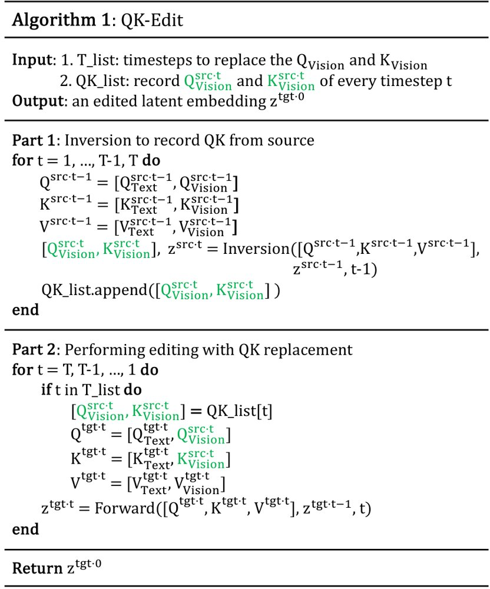
QK-Edit 的伪代码：先保存源视频视觉侧的 Q、K，再在目标生成时替换进去。
解决了什么问题。MM-DiT（如 FLUX、HunyuanVideo）把文本与视觉 token 拼接后在同一个自注意力里计算，文本-视觉与视觉-视觉的交互被揉进同一张注意力图，U-Net 时代靠分别操纵 cross-attention 和 self-attention 的编辑方法（P2P、PnP）因此失效。直接把 MM-SA 拆成四个象限、再套用旧的 CA/SA 编辑策略，往往得到不可用的结果。
方法。作者逐块、逐组件地做消融分析：跳过 MM-SA 会显著改变空间布局，跳过 FFN 几乎无影响；把四个注意力象限分别置零后发现，第 2 象限（text-to-vision）影响可忽略，第 3 象限（vision-to-text）决定文本-视觉对应关系，第 4 象限（vision-vision）决定空间与时间一致性。据此，QK-Edit 在去噪过程中记录源图像/视频的视觉侧 Q、K，并在生成目标时替换掉目标侧的对应分量；由于第 2 象限影响微弱，这一替换等价于同时操纵第 3、4 象限，且只需在推理时做特征替换，不必改动被 flash-attention 封装的注意力图。图像编辑在前 30% 推理步内施加替换，视频编辑用前 20% 步。
关键结果。在 PIE-Bench 真实图像编辑上，QK-Edit 取得 CLIP-T 0.264、DINO 0.776、PickScore 22.33，均高于 RF-Solver 的 0.257/0.769/21.98。在 TGVE+ 的生成式视频编辑设定下，对比同样基于 HunyuanVideo 的 DiTCtrl，CLIP_frames 0.951 对 0.904、PickScore 21.24 对 20.01、ViCLIP_dir 0.217 对 0.141、ViCLIP_out 0.268 对 0.242。真实视频编辑设定下为 ViCLIP_out 0.258、CLIP_frames 0.921、PickScore 20.52；作者另建含 43 条、分辨率超过 1K、长度超过 100 帧的 HiLo-Benchmark，QK-Edit 得 CLIP_frames 0.908、PickScore 20.08，优于 KV_concat 的 0.896/19.87。视频实验覆盖 320×320、65 帧到 1280×720、129 帧，均在 NVIDIA A100 上完成。
为什么值得看。它把「编辑能力」从重新训练或额外适配器，降格成推理时的几行 Q、K 替换代码，让新一代 MM-DiT 生成模型可以低成本复用到图像与视频编辑任务上。对后续工作而言，四象限的功能划分本身也是一份可复用的机理解读。
局限 / 存疑。论文自述的局限包括：真实视频反演在复杂运动场景下仍不准确，会拖累后续编辑；本应保持不变的区域仍会出现轻微意外改动，作者建议未来引入 mask；作为免训练方法，它继承了基座模型的缺陷（文字渲染、体操类复杂运动等）。此外，表 3 中 Flatten 的 ViCLIP_dir 为 0.204，高于 QK-Edit 的 0.196，与正文「在所有指标上超过所有基线」的表述并不完全一致，该结论需打折看待。
生成式 AI
计算机视觉 CV
alphaXiv · arXiv
给扩散模型加保留/精炼令牌，长视频抠像不再跳变
VideoMaMa++ 用分离的 RGB 与掩码令牌流，加上保留、精炼令牌，把扩散抠像推广到长视频，块边界不再闪烁。
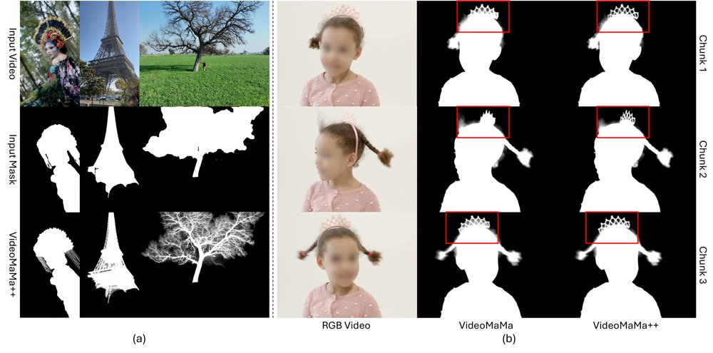
图示对比：VideoMaMa 分块处理在块边界出现闪烁（红框），VideoMaMa++ 既保持跨块一致，又恢复了发丝等细节。
解决了什么问题。扩散式视频抠像依赖互联网规模预训练的生成先验，零样本泛化强，但扩散主干算力开销大，单次推理只能处理 6–24 帧，普通视频也要切成多块。各块仅凭粗糙二值掩码独立生成，而同一掩码对应多种合理的边界细化结果，于是块与块之间会漂移，出现边缘闪烁和透明度不连续。
方法。作者在 DiT 主干上把 RGB 帧与引导掩码表示为两条独立令牌流，与噪声令牌一起经完整时空自注意力交互，取代此前 U-Net 式的通道拼接融合。在此基础上引入一对可学习嵌入——保留令牌（preserve）和精炼令牌（refine）：前者标记「已是成品 matte、需保持」的帧，后者标记「只有粗掩码、需细化」的帧。推理时采用滑动窗口，让相邻块共享若干带保留令牌的重叠帧以传递局部时序信息，并在每个块额外送入一个全局参考锚帧，防止长序列上的误差累积，无需额外训练。
关键结果。在 VideoMatte240K、YouTubeMatte 与 V-HIM60 (Hard) 三个基准上，所有指标均为最优：VideoMatte 上 MAD 3.86、Grad 1.79、dtSSD 0.82，对照 VideoMaMa 分别为 4.34、4.06、1.21；YouTubeMatte 上 MAD 1.15（VideoMaMa 1.41）；V-HIM60 (Hard) 上 MAD 1.69（VideoMaMa 2.30）。块边界一致性专项实验中，开启保留令牌后重叠帧两次预测的 MAD 从 0.7128 降至 0.2583，Gradient 从 0.6811 降至 0.1235。无标注接缝检测显示，YouTubeMatte 上 VideoMaMa 有 62/64（MAX）与 63/64（fg-mean）片段在块接缝处变化超出内部帧，而本方法仅 18/64；16 段真实视频上为 14/16 对 7/16。代价是速度：1024×1024 下单卡 H100 为 1.17 FPS、峰值显存 11.3 GB，VideoMaMa 为 3.41 FPS、7.9 GB。
为什么值得看。它把「扩散先验能给出精细发丝级 matte」和「长视频需要跨块一致」这两件事第一次同时做到，且保留了 6 帧推理即可、无需为长视频额外训练的可扩展形式。对视频后期、背景替换这类真正按分钟计的实际管线，块边界闪烁一直是扩散方法落地的直接障碍。
局限 / 存疑。方法仍依赖上游掩码跟踪：若跟踪器整段锁定到错误目标，matte 会跟着错，这是所有掩码引导方法的共同局限。此外它比前馈模型慢得多（1024² 下 1.17 FPS），且目前缺少能在真实拍摄视频上严格评估时序平滑度的基准，接缝检测只覆盖块边界这一种失效模式。
alphaXiv · arXiv
把几何模型的注意力蒸馏进视频生成注意力
研究者发现视频模型的跨帧注意力常常对不准同一场景元素，于是用冻结的几何模型 VGGT-Ω 的注意力作为对应关系监督，在不

GAD 概览：冻结几何教师从干净视频中提取的对应关系，在去噪过程中引导视频模型的注意力，监督只出现在训练阶段，不改变推理流程。
解决了什么问题。视频扩散模型能生成视觉上连贯的短视频，却难以在时间上保持场景几何与物体结构。作者分析了 Wan2.2 5B 的注意力，发现即使 PCA 特征里已经出现可辨认的场景结构，跨帧注意力响应仍分散在多个区域，无法稳定指向同一场景元素。他们还观察到场景结构的形成与噪声水平和网络深度相关：高噪声时出现在较深层，低噪声时出现在较浅层。
方法。GAD 从冻结的 VGGT-Ω（1B）第 13 层第 10 个头上提取干净视频的跨帧对应关系，并以源 token 分配给目标帧的总注意力质量作为可靠性权重，对可能不可靠的匹配降权。训练时按噪声时间步选择学生层（t<850 用 L5，850≤t<950 用 L15，t≥950 用 L25），在该层用成对监督和轨迹监督两种交叉熵损失约束注意力的匹配分布，并与原流匹配目标联合优化。教师、对应关系缓存和头聚合 MLP 都只用于训练，推理时仅使用训练后的视频模型。
关键结果。在 RealEstate10K 与 DL3DV-10K 的 15 秒长程生成上，三个骨干的七项指标均优于各自 Wan 基线；Wan2.2 5B 上跨帧匹配命中率在两个数据集都取得至少 30% 的相对提升（RealEstate10K 从 0.263 到 0.350，DL3DV-10K 从 0.257 到 0.335），旋转距离从 6.705 度降到 4.335 度。Wan2.1 14B 在两个数据集全部七项指标上为最优，匹配命中率从 0.413 升到 0.476。OmniWorld-Game 的 5 秒动态生成中，主体一致性从 0.825 升到 0.853、背景一致性从 0.900 升到 0.913；推理峰值显存维持 34.85 GB 不变，运行时间 69.60 秒对 70.44 秒。在 DL3DV-10K 上按 5/10/15 秒分别训练时，各时长的四项几何指标均有改善（如 5 秒命中率 0.529 到 0.571），层路由消融中逐步加深的 R8 方案旋转距离为 4.890 度，优于任意固定层的 6.540 度。
为什么值得看。它把「跨帧该看哪里」作为可监督的训练信号而非推理期外挂模块，为需要时间一致环境的视频世界模型提供了一条不增加推理成本的路径。
局限 / 存疑。监督质量受制于教师 VGGT-Ω 的匹配能力与空间分辨率，论文也承认该教师的注意力在目标元素被遮挡或缺失时仍可能出现峰值。层路由只依赖噪声时间步、训练全程固定，且方法仅在 Wan 这类双向模型上验证，自回归生成尚未测试；5 秒和 10 秒设定下还出现小幅 FID 或 FVD 折衷。
生成式 AI
alphaXiv · arXiv
把接触当接口：人形机器人全身运动新框架
ETH团队提出三阶段学习框架，用注意力接触规划器替代全身参考轨迹，单一策略让Unitree G1完成爬梯、钻爬与翻越。
解决了什么问题。纯强化学习训练的人形机器人策略泛化性好，但要诱导出爬、钻、撑等全身协调动作，靠奖励塑形和探索非常困难且奖励微调就会改变接触策略。基于参考动作的方法动作自然，却只能执行已有轨迹，部署到新环境时还得先在线生成全身参考，在稀疏支撑面上小误差即失败。
方法。作者把接触作为感知与控制之间的中间表示：用人体动作重定向数据提取九个身体部位（双手、双肘、双膝、双脚与骨盆）的接触位置与占用标签，先训练一个以接触为条件的全身跟踪器，再训练一个基于地形注意力、以本体感受和目标指令为条件的接触规划器。第三阶段在程序化生成、无参考动作的地形上用强化学习微调，成功回合的接触经事后标注回灌给规划器，形成自举循环；部署时仅依赖机载LiDAR神经建图，不使用任何参考输入。
关键结果。仿真中仅给接触命令的跟踪器在全部地形类别成功率至少98.5%，额外输入参考运动学没有带来一致提升；强化学习微调后，稀疏全身接触地形的成功率提升54.8个百分点，参考锚定地形上的表现仍保持。与最接近的前作MGMT相比，该方法在全部11个地形类别上成功率更高，8条人工组合赛道上平均成功率92.5%，MGMT为58.8%。真机上单一策略完成爬楼梯、爬梯子、钻爬、翻墙、跳下与跌倒后起身；机载LiDAR建图在Jetson Orin NX上处理每帧10 Hz、20000点的扫描耗时在30 ms以内。
为什么值得看。它把「演示数据怎么用」从复现轨迹改成学习交互结构，使动作先验在训练时提供引导、在部署时被完全丢弃，为单一策略组合多种全身技能提供了可扩展路径。
局限 / 存疑。感知与接触表示目前主要面向地形中心的2.5维交互，悬空抓握、悬挂与操作需要更丰富的三维表示；系统只做局部目标条件运动而非全局导航，且接触序列无法区分后空翻与垂直跳这类空中动作。与PHP、LLP等方法的比较仅为定性表格，作者也承认因平台、数据与感知模态差异，未做同设定定量复现。
alphaXiv · arXiv
不只是一个主体：让故事配图适配每个场景
训练无关的 EOS-Story 在 CLIP 的 ⟨EOS⟩ 嵌入上注入外观残差，并按场景尺度锚定身份特征，Consis
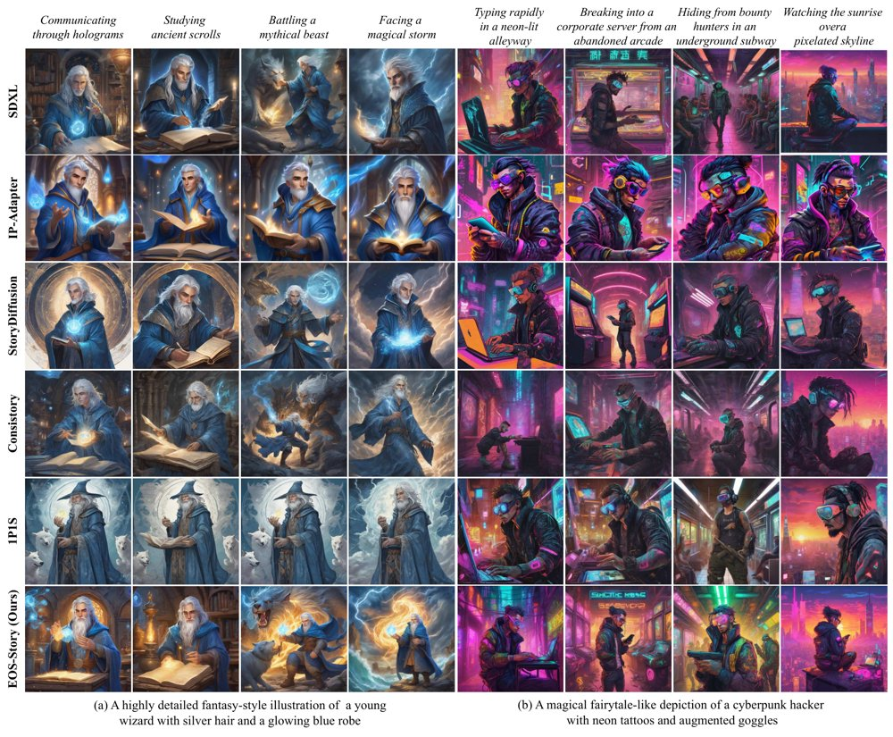
与既往方法的图像对比：本方法在忠实还原给定场景的同时，让主体在不同画面中呈现灵活的姿态与取景。
解决了什么问题。现有视觉叙事方法大多只盯着主体身份保持，把整段叙事提示当作单一输入编码，长提示中的动作、环境等场景细节容易被稀释，造成语义错位。视觉侧的特征注入又是空间无感的，不管每个场景的取景和主体尺度，结果主体姿态僵化、跨场景结构重复。
方法。作者提出训练无关的 EOS-Story，在文本空间用 Cross-Contextual Bridging 把叙事拆成 Style+Subject、Identity、Scene 三个子提示，取 eos_id − eos_sty 作为短语级外观残差，加到各场景的 ⟨EOS⟩ 嵌入上，避免拉长场景提示。视觉空间用 Adaptive Identity Preservation：早期去噪阶段做 Identity Anchoring，把身份特征裁剪缩放到场景主体尺度后按相似度匹配，并以 μ+σ 为自适应阈值过滤不可靠对应；第 9 步后切换为 Identity-Aware Self-Attention 精修融合。
关键结果。在 Consistory+ 与作者扩展的 Consistory+_+ 上，EOS-Story 的 CLIP-T 为 0.9042 / 0.8998，高于 Consistory 的 0.8868 / 0.8974 和 1P1S 的 0.8871 / 0.8900；DreamSim 为 0.2005 / 0.2146，优于 Consistory 的 0.2355 / 0.2463 与 1P1S 的 0.2132 / 0.2368；ImageReward 为 1.1680 / 1.3217，Aesthetic 为 6.1764 / 6.1791。CLIP-I 为 0.8850 / 0.8787，作者承认略低于最佳（IP-Adapter 为 0.9398 / 0.9410），但 DreamSim 最好。消融中仅注入 ⟨EOS⟩ 的配置 CLIP-T 0.9042，高于注入主体 token 的 0.8909 和所有非 EOS token 的 0.8990；20 人、40 个 storyboard 的用户研究中，该方法在 52.8% 的案例被评为最佳；生成 5 个故事占用 47777 MB 显存、耗时 118.570 秒。
为什么值得看。它指出现有故事生成方法的短板不只在身份保持，还在于对每个场景语义与结构差异的建模，并给出一个不改模型权重、可直接搭在 SDXL 上的文本—视觉双侧修正方案。
局限 / 存疑。方法依赖交叉注意力图作主体掩码，论文承认掩码有时会覆盖无关区域导致错位，某些概念（如「faun」）则受限于 SDXL 主干根本画不出。此外 Cross-Contextual Bridging 依赖 CLIP 的 ⟨EOS⟩ 语义汇总特性，无法直接迁移到 T5 或 LLM 文本编码器，迁移到 FLUX 时只能保留 AIP 模块。
生成式 AI
alphaXiv · arXiv
DriftSpread：先漂移再扩散的一步策略
提出 DriftSpread：用价值函数引导的漂移与熵诱导的扩散顺序训练一步策略，在 MuJoCo 五任务上聚合归一化回
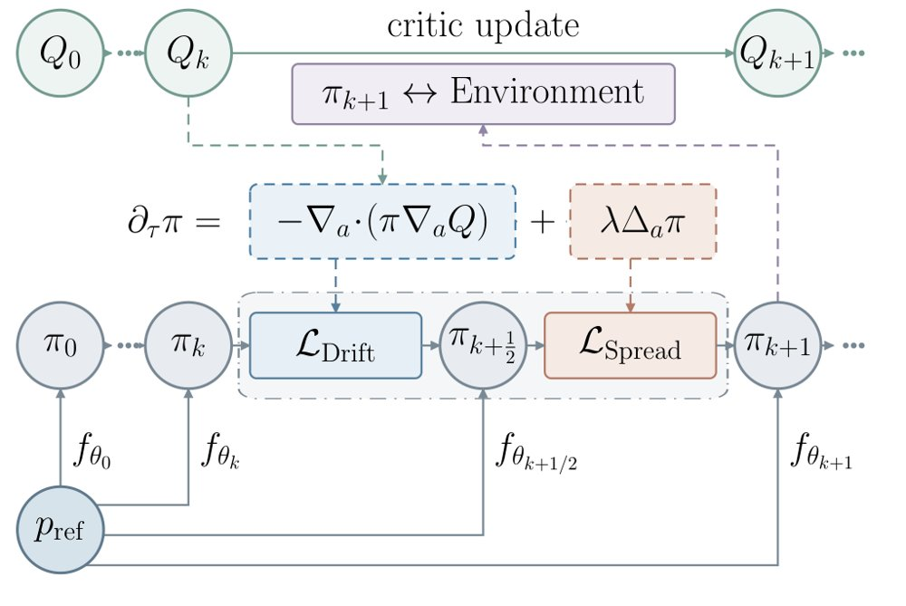
DriftSpread 概览：同一 actor 交替进行 critic 引导的 Drift 回归与熵诱导的 Spread 分布匹配，从参考噪声一步生成动作，并通过拓宽漂移后分布来体现熵项。
解决了什么问题。扩散和流策略能表达多模态动作分布，但通常需要迭代采样，训练和推理开销高。在线最大熵强化学习中，critic 只定义 Boltzmann 目标分布而不直接给样本，隐式策略又没有可处理的密度来计算熵项。
方法。作者从负最大熵目标推导出两个更新：Drift 沿 critic 梯度移动动作并用回归拟合，Spread 向更新后的动作加独立噪声构造更宽分布，再用 MMD 通过特征函数做分布匹配。两者在同一个 actor 上顺序执行，推理时从参考噪声一步前向生成动作，无需策略密度或 score 估计，也无需直接采样 Boltzmann 目标。
关键结果。在 MuJoCo 五个任务（每任务 10^6 次环境交互、5 个随机种子）上，DriftSpread 在 13 个基线中取得最高聚合归一化回报（论文未给出该聚合回报的具体数值），平均推理时间为 0.15 ms/action，低于 DIME 的 1.24 ms 和两步 MeanFlow 策略 MFPO 的 0.36 ms。其训练成本低于扩散、流和 MeanFlow 基线，但 DFP 与 WPPG 的训练时间略低。
为什么值得看。它把 Drifting 的一步生成思路用于在线最大熵强化学习，在不估计策略密度或 score 的情况下纳入熵效应，为降低生成策略的采样开销提供了新路径。
局限 / 存疑。理论收敛依赖固定 critic、精确拟合以及小步长/长时间极限，实际在线训练并不满足这些条件；实验仅在 MuJoCo 仿真中进行，Spread 噪声分布与尺度也固定，尚未验证真实系统和自适应噪声策略。
生成式 AI
强化学习 RL & 序列决策
alphaXiv · arXiv
CineMem：多镜头视频的细粒度记忆检索
把双向视频模型改成自回归多镜头生成器，用在线聚类KV缓存和逐查询检索，PTCS达到0.8242。
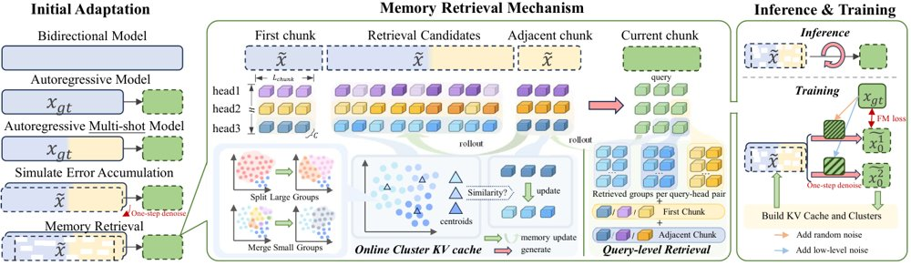
框架总览：双向模型经多阶段适配转为带记忆检索的自回归多镜头生成器，推理时每个 query 通过逐 token、逐头的检索访问首 chunk、相邻 chunk 与在线聚类得到的历史候选，训练时用重采样真值帧构造记忆输入以缓解误差累积。
解决了什么问题。自回归视频生成要靠记忆检索维持长程一致性，多镜头场景尤其需要在镜头切换造成的大幅视觉变化下保持语义连续。现有方法大多在帧级别检索，且所有查询 token 共享同一份历史上下文，忽略了不同查询对历史信息需求的异质性，造成检索冗余、历史记忆利用率低。
方法。作者先以教师强制预热加重采样上下文训练，把 Wan2.1-T2V-1.3B 双向模型改造成逐 chunk 自回归的多镜头生成器，并在该全记忆模型上分析注意力，发现历史 token 存在跨帧的语义聚类结构，不同查询与注意力头的记忆偏好差异显著。据此提出在线聚类 KV 缓存（按余弦相似度分组，用分裂、合并、负载惩罚和分配一致性项维持簇规模平衡），以及逐查询、逐头的检索：每个 query-head 对在固定检索预算下独立挑选最相关的簇，同时始终保留首个 chunk 与最新 chunk 作为锚点。
关键结果。在自建的 100 条 prompt 评测集上，CineMem 的 PTCS 为 0.8242，高于双向模型 MultiShotMaster 的 0.7984、HoloCine 的 0.7385 和因果模型 ShotStream 的 0.6917；转场控制 0.9960、镜内主体一致性 0.9716、背景一致性 0.9630。理论效率方面，CineMem 总算力 638.82 TFLOPs，低于全历史注意力的 932.56 TFLOPs 和帧级检索的 650.02 TFLOPs，其中检索开销为 15.02 TFLOPs。消融显示重采样上下文训练的 PTCS 为 0.7922，明显高于纯教师强制的 0.7120。模型在 16 张 H200 上训练（教师强制预热后 20K 步，记忆检索再训 3K 步），数据为 45K 多镜头视频，定性结果覆盖 15 秒生成，附录另给出 30 秒样例。
为什么值得看。它把 LLM 里常见的细粒度 KV 缓存组织思路迁移到视频记忆上，说明在固定检索预算下，“按语义聚类 + 按查询路由”比帧级分组更接近全记忆注意力，为长时分镜叙事提供了可扩展的记忆接口。
局限 / 存疑。作者在附录中承认，受算力限制只用了 1.3B 小骨干和有限训练数据，生成画质可能落后于大规模扩散模型；在多实体复杂转场中仍会出现角色消失、细节不一致等失败。此外 CausalCine 权重未公开，对比是通过复现其帧分组+共享检索策略间接完成的，PTCS 本身也依赖 VLM 评分。
生成式 AI
强化学习 RL & 序列决策
机器人 & 具身智能
alphaXiv · arXiv
LEAP：从轨迹学习可复用路径作用量
论文提出动作学习框架 LEAP：以可处理参考过程为锚，用完整轨迹比较学习路径修正，并在双井、轨道与分子基准上验证复用。

LEAP 以数据轨迹和可处理参考过程为输入，学习中心化的路径空间修正，并与参考动作结合得到 S_θ(Φ;c)。
解决了什么问题。现有方法通常学习局部动力学或直接生成轨迹，但单步转移目标可能漏掉跨时间依赖，生成模型也不一定给出可评估、可优化的完整路径目标。本文研究动作学习：从轨迹观测中恢复随机作用量，使同一对象能用于路径排序、优化和采样。
方法。LEAP 引入可处理的离散时间高斯马尔可夫参考过程，把目标作用量写成参考作用量减去路径密度比修正。训练时用 InfoNCE 式集合比较目标，让观测轨迹与参考轨迹竞争，并在参考分布下中心化修正；模型可选局部、全局或混合参数化，以分别表达可加的漂移差异和跨时间非可加依赖。学到的动作可直接用于路径排序、代表路径推断、机制引导、约束优化和 Metropolis-Hastings 采样。
关键结果。双井实验中，LEAP 的漂移 MSE 为 (3.3±2.7)×10^-4，低于 Kramers-Moyal 的 0.8132±0.0030 和立方速度回归的 0.7752±0.0043；改变端点和时域后，T=4 的真实路径成本为 0.2533±0.0001（解析 0.2532），T=16 为 0.2506±0.0006（解析 0.2500）。31 体轨道基准（186 维状态）上，LEAP-Global 的修正 NRMSE 为 0.228±0.011，而 LEAP-Local 和 Transition NCE 分别为 1.0013±0.0015 和 1.0008±0.0013；42 体、256 步、64,764 坐标时 LEAP-Global 为 0.111，LEAP-Local 为 1.0015±1.7×10^-3。丙氨酸二肽端点加三个内部观测的补全圆 MSE 为 0.0931±0.0016，低于条件 DDPM 的 0.119±0.012 和条件流匹配的 0.125±0.011；仅端点时 LEAP 为 0.6225，优于速度回归 0.6609 和二元 NRE 0.6682，但条件生成器更低（DDPM 0.409，流匹配 0.350）。温度迁移中，600K 训练迁移到 500K 的 AUROC 为 0.9579±0.0057，直接 500K 训练为 0.9403±0.0099；500K 训练迁移到 600K 为 0.9719±0.0068，直接 600K 训练为 0.9754±0.0012。
为什么值得看。这项工作把轨迹观测转成可复用的路径级目标，使同一动作无需重训即可用于路径排序、机制引导、约束优化和采样，对分子模拟和科学推断具有潜在价值。
局限 / 存疑。局限包括需要参考与观测路径分布有足够重叠，结构化修正的精确性依赖共享扩散假设，状态依赖扩散需额外似然比项，投影到简化坐标还会引入记忆与摩擦，因此分子实验学的是 (φ,ψ) 有效作用量而非全分子作用量；另外，仅端点观测时条件 DDPM/流匹配的补全误差（0.409/0.350）低于 LEAP（0.6225），说明稀疏观测下动作方法不一定占优。
alphaXiv · arXiv
内省位置报告由门控与路由注意力头分工
在固定输入下注入概念向量，模型需报告被扰动位置或none；研究在三个模型家族中找到门控头与路由头两类注意力头。
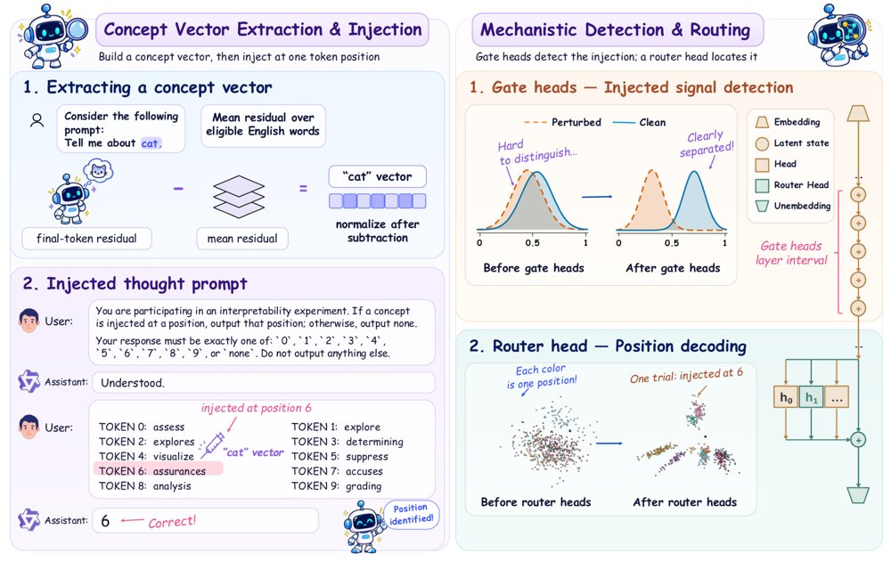
任务与双组件电路示意：左为固定文本下在十个候选位置之一注入概念向量或不做干预并读取首个输出，右为门控头影响是否报告、路由头区分十个注入位置。
解决了什么问题。大模型有时能在输入不变时报告隐藏激活被扰动，但其检测与定位机制不清楚。此前工作依赖transcoder近似或LLM judge评分，可能偏离模型原生计算。作者要回答：哪些注意力头控制“是否报告”和“报告哪个位置”，以及它们如何协作。
方法。论文构造固定文本、十个带标签候选位置的受控任务：在某一位置注入概念向量或不注入，模型只输出位置标签或none，评分仅取首个输出位置的logits。作者用activation patching和straight-through估计器联合搜索门控头，用逐头修补找路由头，并用QK/OV分解与SVD比较不同概念的可定位性。
关键结果。在Qwen3-4B-IT、LLaMA-3.1-8B-IT和Gemma-3-12B-IT上，六种标签设置下注入试验定位准确率均值分别为54.49%、44.31%和65.95%，clean试验none准确率均值为89.44%、62.78%和87.78%。门控头各32个（占各模型注意力头2.8%、3.1%、4.2%）：Gate-off把注入试验的none率从37.7%/25.3%/23.8%提高到81.5%/60.7%/80.7%，Gate-on把clean试验的位置报告率从10.6%/37.2%/12.2%提高到41.8%/69.3%/62.6%。交叉位置修补中，报告位置主要跟随路由头：输出j为38.0%/37.8%/40.1%，输出i仅2.9%/3.2%/4.9%。QK分析中高准确概念的首模大小仅高1.08–1.22倍，但查询投影高1.20–1.80倍，目标分数变化高1.76–5.31倍；OV前五模的注意力对齐高1.13–3.85倍。移除门控头前五个OV模后，Qwen和Gemma的正确位置token概率从47.99%降至5.12%、从83.12%降至13.53%，LLaMA从40.22%降至33.69%。
为什么值得看。这些结果把内省报告拆成“是否报告”与“报告哪里”的可干预计算环节，为监测激活引导是否被模型登记提供候选位点。
局限 / 存疑。结论限于六个任务变体、每个模型一个注入层与强度、最大12B模型，且只分析注意力头、未覆盖MLP；概念池还经过筛选，向自由形式和未提示报告的外推尚未验证。
alphaXiv · arXiv
FrontierCS 2：智能体修补论文代码
新基准删去48篇论文的核心代码，要求智能体在仓库内打补丁并击败原作者实现。

FrontierCS 2 的任务构建方式：删去论文的关键贡献，智能体需在原作者代码所在仓库中提交补丁并超过原实现。
解决了什么问题。现有开放式编程基准通常给一段题面、让智能体写一个程序，运行结束后一次性评分；环境型基准又多局限于软件工程或机器学习，且常以测试、排行榜或评分细则为标尺。FrontierCS 2 要问的是：智能体能否进入一篇论文的代码仓库，修改实现并超过原作者。
方法。任务通过“减法”构建：定位并删除论文核心贡献代码，保留依赖和调用接口，删除部分作为人类参考。智能体在五小时内可随时提交补丁，judge只返回开发集分数和净化消息，最终在含未见工作负载的留出集上按每个指标是否超过参考判定通过。基准含48个任务、覆盖13个CS领域，另有100多个私有任务未公开。
关键结果。评估12个智能体（每个模型配一个harness，每任务一次运行）；最佳为Claude Code中的Claude Opus 5.5，通过其58%的运行，其余均低于一半；有16个任务没有任何运行通过。作者还报告624次运行用于FCI拟合，FCI每10分对应一个logit，中位任务难度约等于最强智能体的FCI。
为什么值得看。它把评估从一次性编程题推进到真实科研仓库中的迭代改进，并以作者代码为可执行标尺，更接近计算机科学研究与开发。
局限 / 存疑。每任务仅一次运行，FCI/FDI区间较宽，16个任务无人通过；案例分析显示通过与否和最终分可能忽略电路面积、每查询字节等侧成本。
alphaXiv · arXiv
IQuest-Q1：320B稀疏MoE智能体模型
IQuest研究发布320B总参数、15B激活的稀疏MoE智能体基础模型，主打CLI交互与编程能力，并开源模型权重。

递归多token预测示意图：L表示输入序列长度，t表示起草步数，同一MTP层在多个起草步骤中被递归复用。
解决了什么问题。LLM智能体已把命令行界面（CLI）作为与外部系统交互、调用工具、访问文件和执行代码的通用入口，因此构建更强的CLI能力成为训练智能体基础模型的核心需求。CLI场景要求模型在多种agent scaffold及其版本上稳定工作，并能处理长程任务和真实环境中的工具调用可靠性问题，这对数据合成、训练流程与评估设计都提出了更高要求。
方法。IQuest-Q1采用三阶段训练流程：预训练结合Stable SplitNorm、Muon和μP参数化，并用两阶段课程把代码数据比例从40%提升到70%；中期训练扩展数据混合，并将上下文从32K逐步扩展到128K与512K；后训练通过SFT、领域专用RL、多教师在线策略蒸馏（MOPD）与模型合并，整合多scaffold下的能力。模型采用稀疏MoE架构，总参数320B、每token激活15B，引入混合滑动窗口注意力（3层SWA加1层FA）、查询感知sink注意力、QKNorm以及递归多token预测等组件。
关键结果。在编程基准上，IQuest-Q1在DeepSWE v1.1获64.6分、SWE-bench Multilingual 80.3分、SWE-Bench Pro 57.5分、NL2Repo-Bench 63.0分、ProgramBench 60.9分、CyberGym 84.5分、PaperBench 86.0分，内部IQuest-CLIBench为53.7分。通用与推理方面，GPQA Diamond 93.3分、Humanity’s Last Exam无工具39.2分、有工具55.7分、JobBench 55.7分、BrowseComp 85.5分、Toolathlon-Verified 75.0分。在与Qwen3-MoE风格基线的受控对比中，其缩放效率高出1.93倍，达到相同训练损失约需52%的训练计算量；按拟合趋势外推，临界模型规模约为激活572B参数。
为什么值得看。IQuest-Q1开源了模型权重，并以CLI交互为中心设计数据合成、多scaffold RL与蒸馏合并流程，为构建面向真实开发环境的智能体基础模型提供了一条可复现的工程路径。其将模型嵌入内部迭代开发流程、由agent自行追踪失败并提交数据清洗与增广方案的做法，也展示了在人工监督下推进模型迭代的实际流程。
局限 / 存疑。论文自述模型仅支持文本输入，工具调用依赖IQuest特定的聊天模板与兼容的解析器和agent harness；在真实CLI任务中，模型可能忽略约束、重复失败尝试或无法解决问题，需要人工监督。评估方面，IQuest-CLIBench为内部自建基准，表2中部分基线分数由作者自行测试(标*)，与公开成绩的可比性需谨慎看待。
alphaXiv · arXiv
用测试时回归重做序列压缩
TTR-Compressor把token块压缩写成测试时岭回归，用闭式对偶解替代池化与投影，并在稀疏注意力和视觉toke
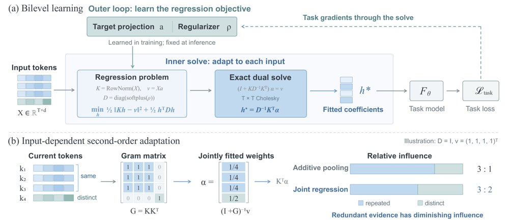
TTR-Compressor总览：内层把token块压缩为岭回归并用对偶Cholesky闭式求解，外层用任务梯度学习回归目标与对角正则，Gram矩阵使冗余token影响衰减。
解决了什么问题。块稀疏注意力和多模态大模型都依赖序列压缩，但常用池化、拼接投影或注意力加权池化在聚合token时不显式建模token间关系。结果是冗余token相互叠加、独特信息被稀释，而压缩一旦丢弃信息便无法在下游恢复。
方法。TTR-Compressor把每个token块构造成自监督岭回归：归一化token作为回归键，标量目标由可学习投影（可选局部卷积）给出，回归系数即压缩表示。外层用任务损失端到端学习目标投影和可学习对角正则，内层利用T≪d，通过对偶T×T Cholesky分解精确求解，基础压缩器仅增加2d个参数。
关键结果。在345M语言模型的块稀疏注意力实验中，TTR-Compressor在RULER上的平均分为0.5092，高于注意力加权池化的0.3920，带卷积变体为0.5144；原文称其比最强基线高12.24个百分点。视觉token合并中，2×2压缩把平均分从MLP的54.93提高到55.92（卷积变体56.03），3×3卷积变体比MLP平均高2.58分，并在OCRBench、InfoVQA、ChartQA上分别高4.10、4.54、3.56分。附录的1B模型/100B token设置下，TTR平均0.7996，对比注意力加权池化0.735。
为什么值得看。序列压缩是长上下文与多模态模型的关键信息瓶颈，TTR把压缩从固定聚合变成输入相关的推理问题，且只增加少量参数，具备作为即插即用模块的潜力。
局限 / 存疑。实验规模仍有限：主实验为345M语言模型和Qwen3-4B视觉设置，1B/100B仅与注意力加权池化对比。长上下文检索仍有明显失败模式：TTR在RULER上平均0.5092，MK-NIAH 32K仅0.110，且方法依赖T≪d以控制T×T求解成本。
alphaXiv · arXiv
多视角世界模型同时预测视频与3D点轨迹
VPM 以多视角视频历史和语言指令为条件，联合预测未来视频与场景点的3D轨迹，并把点监督反哺到生成表示，还扩展到机器人动
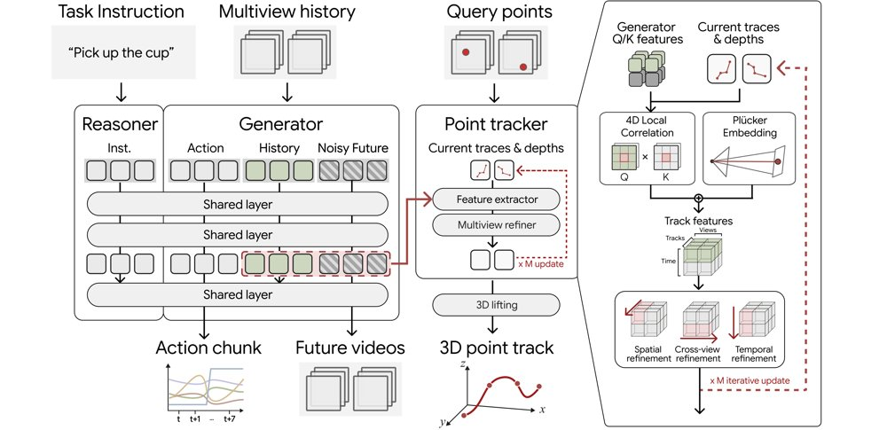
给定带位姿的多视角历史视频与任务指令，VPM 预测未来视频以及从观测帧中查询点的轨迹，3D 点跟踪器迭代精化点位置与深度后再提升到 3D，联合点监督塑造生成器表示，动作扩展版本还会输出机器人动作块。
解决了什么问题。世界模型通常只以视觉逼真度衡量，但画面合理并不等于预测描述了一致的3D运动；单相机还常看不到遮挡下的场景结构与动态。要让不同视角的未来预测指向同一件事，模型必须把各相机的观测关联到共同的场景演化描述上，而现有视频生成模型缺乏这种跨视角的几何约束。
方法。作者在 Cosmos 3 基础上构建 VPM：把各相机视频 token 放进同一序列，用基于射线的嵌入编码相机几何，并在位置编码中加入视角轴以区分相机流。生成器之外增加一个轨迹头，预测从观测帧中选出的持久场景点在所有视角下的未来3D轨迹，并与视频生成联合优化，使外观变化锚定到共享的3D运动描述。作者还构建了配对的仿真数据语料 VPM-Data 与预测基准 VP-WorldBench，并通过把机器人动作作为 token 模态加入生成器，将模型扩展到策略学习。
关键结果。在 VP-WorldBench 和既有 4D 生成基准上，同时使用视频与轨迹监督的 VPM（V+T）优于仅视频版本（V）。消融显示：在 Simulation General 上加入序列损失使 FVD 从 101.37 降到 91.92，再加入深度损失使 Real-world Robot 的 δ3D_avg 从 54.69 升到 59.94；同时去掉视角轴、Plücker 嵌入与相机相关旋转三项后，Simulation General 的 FVD 由 81.92 恶化到 140.06，补回 Plücker 嵌入则从 128.41 降到 84.60。真实机器人实验在 DROID 的 89K 轨迹子集上训练，三个抓放任务各做 24 次试验，文中称点监督在每个基准上都提升了成功率，但具体成功率数字论文未给出具体数字。
为什么值得看。它把「点往哪里动」作为跨视角的共同监督信号，为多视角视频世界模型提供了一个可验证3D一致性的抓手，并让同一套3D感知表示直接服务于机器人策略。
局限 / 存疑。点监督只覆盖机器人和被标注物体而非整个场景，骨骼式标注也忽略了布料与头发的独立运动；推理时假定相机内外参已知，且所有相机流共享一个 token 序列，计算代价随视角数增长。
alphaXiv · arXiv
DONIC：单策略实现双臂灵巧参考跟踪
提出通用双臂灵巧跟踪器DONIC与BiHOI数据集，单一检查点零微调成功率86.79%和57.32%。

DONIC总览：BiHOI采集经重建与重定向后，与公开数据参考共同构成训练池；共享双臂策略在PPO+BC迭代循环中通过仿真交互和核验示范学习，物体中心逐手奖励、CCA与行为克隆提供互补学习信号。
解决了什么问题。现有灵巧参考跟踪模型大多聚焦单手操作和有限交互类型，难以覆盖日常生活中常见的双臂协同。接触丰富的双臂操作数据稀缺，且双手角色与接触时序的协调使通用跟踪更困难。
方法。作者构建BiHOI多视角数据集，含1575条序列、229个物体、14.77小时、32路RGB视角，并将重建的人手—物体交互重定向为机器人参考。DONIC用PPO与行为克隆的反馈循环训练一个共享双臂策略，成功执行经核验后回灌为示范。其物体中心逐手奖励分别监督双手接触角色，Clip-Centered Advantages在GAE后减去每条参考的均值以保留轨迹内差异。
关键结果。在零微调、单一检查点设置下，DONIC在训练物体未见轨迹上成功率86.79%、完成度67.62%，在留出物体上57.32%、54.69%；比更强的双臂基线Dexplore-bi分别高77.36和45.73个百分点。加入全部1575条BiHOI序列后训练池从1845增至3420条，成功率升至88.68%和59.76%，未见物体平移误差从15.74降至13.96厘米。消融中移除CCA使成功率降至81.13%和48.17%，移除接触门控降至81.13%和48.78%。腕部平移误差在未见轨迹和未见物体上分别从21.88降至3.96厘米、从19.46降至4.58厘米。
为什么值得看。这项工作把人类双臂演示转成可执行机器人参考，并展示单一策略跨轨迹和物体泛化，为家庭辅助等双臂灵巧操作提供了数据与训练范式。
局限 / 存疑。定量评估限于仿真中的单刚体物体参考跟踪，依赖重建重定向轨迹，尚未在物理双臂系统或独立基准上验证，也未覆盖长时程、多物体和留出操作类别。接触监督使用净力与距离代理，重建流程没有显式接触或碰撞损失。
alphaXiv · arXiv
聚合优先的扩散模型强化微调
提出 DiffusionART，先聚合每个提示的奖励为共享引导方向，再用漂移自适应恢复替代 EMA，在图像和视频生成上更
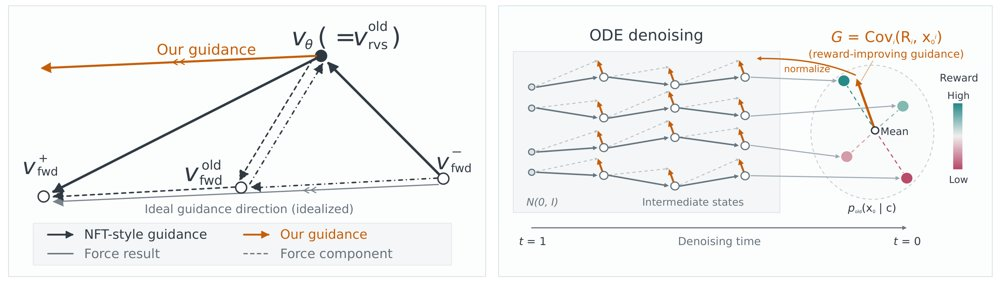
左图对比 NFT 正负分支引入的相反一致性力与 DiffusionART 直接在反向速度上施加 G(c)；右图展示按提示聚合端点与奖励得到归一化引导。
解决了什么问题。在线扩散强化学习中，Flow-GRPO 等反向过程方法因信用分配差而效率受限；DiffusionNFT 等前向过程方法高效，却依赖逐任务调参的 EMA 才能稳定。作者进一步指出，NFT 目标隐含一个前向-反向一致性力，正负分支联合训练只能部分抵消它。
方法。DiffusionART 先把每个提示的 K 个 rollout 端点与奖励聚合成归一化协方差引导 G(c)，直接施加到反向 rollout 访问的状态上，从构造上移除一致性力。随后把每个 rollout 拆成两个不相交小批，各做一次 MSE 更新；第二次更新按每个状态的漂移提供恢复力，并用 trust-region mask 抑制过大策略变化。
关键结果。在 HunyuanVideo-13B、VQ:MQ=1:1 权重下，DiffusionART 达到 DiffusionNFT 与 Flow-GRPO-Fast 的后期平均奖励水平所需 GPU 小时分别少 12.02 倍和 11.72 倍，平均训练奖励分别高 28.8% 和 53.0%。T2V 评估 VQ 与 MQ 达 8.970 和 4.224，比最强基线高 31.4% 和 57.4%；I2V 达到 MQ 6 用 45.8 GPU 小时，对比 Flow-GRPO-Fast 的 220.3 小时，减少 4.8 倍。成对奖励下 K=2 的 400 步耗 260.8 GPU 小时，K=8 为 883.3 小时，减少 3.4 倍。
为什么值得看。它为扩散与流匹配模型的后训练提供了一条不依赖可微奖励模型、也无需逐任务 EMA 调度的稳定路径，并可扩展到视频生成和成对偏好奖励。
局限 / 存疑。理论诊断主要针对 NFT 风格目标，方法仍需每组多次采样和两次更新，带来额外计算；trust-region mask 在图像任务上收益有限，无 mask 甚至略快。论文还显示单次更新会逐渐退化，pair-local 引导在 GenEval 400 步为 0.78，低于 prompt-global 的 0.91。
alphaXiv · arXiv
WorldForge V2：免训练相机轨迹控制
将变换后的参考帧融入模型预测的干净估计再重加噪，WorldForge V2 在冻结主干时实现相机轨迹控制。
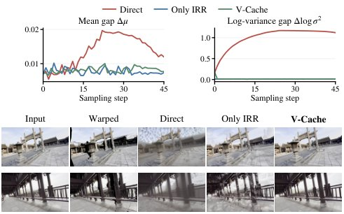
不同参考插入策略下的噪声状态一致性：直接插入会在可见区域与模型生成区域之间留下噪声均值和对数方差的间隙，并伴随噪声块与结构断裂；IRR 缩小这些间隙，V-Cache 在保持连续表面和清晰几何细节的同时近似其校正。
解决了什么问题。现有相机控制方法要么依赖大量轨迹—视频监督进行微调，要么在推理期采用 warping-and-repainting，但把变换后的可见区域直接拼进噪声潜变量会带来去噪状态不匹配。论文将这一问题称为去噪状态域间隙，表现为边界不连续、几何伪影、噪声块和纹理退化。此外，相机运动容易与物体及场景外观纠缠，且变换参考本身可能不可靠，错误会沿采样过程累积。
方法。WorldForge V2 用 IRR 把变换参考与模型预测的干净估计在可见性掩码下融合，再重加噪到当前时间步，使所有区域共享同一高斯噪声实现，从而缩小去噪状态间隙。FLF 借助光流定位与运动相关的潜通道，只在这些通道注入轨迹引导以减轻外观畸变；DSG 则比较有引导与无引导的预测方向，抑制不可靠参考带来的偏差。效率方面，v-cache 复用前一次去噪预测在噪声潜空间中近似校正，避免额外模型评估；进一步地，Trajectory LoRA 只适配对轨迹敏感的模块，并用两阶段训练策略利用有限监督。
关键结果。论文称在多个数据集上取得相机控制视频生成的 SOTA 生成质量与轨迹精度，并称来自单个训练场景的数据即可支持泛化到未见场景。但材料中的定量表格未列出 FID、FVD、CLIP/CLIP-V、ATE、RPE-T、RPE-R、PSNR、SSIM、LPIPS 等指标的具体数值，论文未给出具体数字。
为什么值得看。相机轨迹控制是视频扩散模型进入 3D/4D 生成、视频重渲染与世界模型的关键接口。WorldForge V2 试图以免训练引导加轻量 LoRA 的方式，在不破坏预训练时空先验的前提下复用这些模型。
局限 / 存疑。论文把长时程、实时流式生成列为未来工作，说明当前方法尚未覆盖这些场景；v-cache 只是对校正的近似，其精度损失与延迟收益在材料中未量化。此外，材料未给出定量结果，“单场景训练即可泛化”仍需更系统的跨场景验证。
alphaXiv · arXiv
BeNice! 实现循环模型 KV 共享
两阶段训练让循环语言模型在推理时复用最终循环的 KV 缓存，缓解内存随循环深度线性增长。
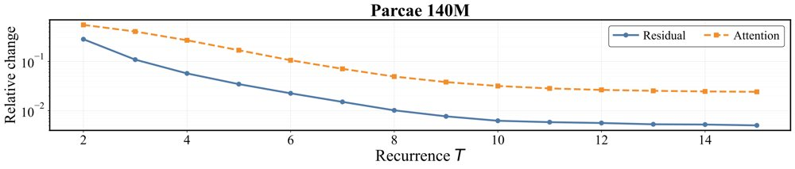
预训练循环模型的定点收敛：在已发布的 Parcae 模型和 Huginn 中，循环残差状态与注意力模式的相对变化随循环深度增加而下降。
解决了什么问题。循环架构重复使用同一组层，能在参数固定下提升质量，但推理时每个 recurrence 都会生成独立 KV-cache，使内存随循环次数线性增长。此前的 KV-sharing 只在部分模型上有效，机制不清，且相同训练的模型也不一定具备该性质。
方法。作者先用 stochastic depth 预训练，诱导收缩的残差动力学，让不同循环的表示趋向共同不动点；随后提出 BeNice! 后训练，把最终 recurrence 的 KV-cache 广播到第一个 recurrence，并联合优化共享与不共享路径以纠正首个循环的残差误差。该方法也扩展到 MLA 和 KDA 等高效序列混合器。
关键结果。在 Parcae 模型上，BeNice! 使共享设置下的 Core 和 Core-extended 分数最多提升 8.35 和 4.56 分；相比标准微调，共享时验证困惑度改善 9.75 分，非共享质量持平。模拟长上下文推理中，KV-sharing 将 1.3B 模型 HBM 占用从 63.82 GB 降到 21.60 GB（66.2%），缓存命中率最多提升 31.4%（8.1 个百分点），吞吐量最多提升 23.6%，p90 TTFT 最多降低 83.6%（2 req/s 时从 139.2 s 降至 23.2 s）。
为什么值得看。若成立，循环模型可通过增加测试时循环次数提升质量，而不让 KV-cache 内存随深度增长，对长上下文和内存受限部署尤其重要。
局限 / 存疑。KV-shareability 并非所有循环模型天然具备，stochastic depth 单独不足，仍需 BeNice! 后训练；实验集中在 Parcae 架构和模拟推理负载，真实部署与其他架构的泛化尚待验证。
alphaXiv · arXiv
新评测套件：激活引导未在综合权衡上胜过提示引导
SteerScope用15项指标和23种方法，在Gemma-2两档模型上评估激活引导的收益与副作用。

Gemma-2-2B-it（上）与Gemma-2-9B-it（下）在不同归一化干预强度下的概念表达变化。
解决了什么问题。现有激活引导评测多覆盖安全纠缠、部署可靠性或跨语言控制等局部维度，缺少对目标功效与语言质量、任务能力、安全可靠性副作用之间权衡的系统刻画。不同方法还常只在单一工作点比较，难以反映干预强度变化和输入分布变化下的表现。
方法。作者提出SteerScope，以“引导结果”和“方法属性”两轴组织15项指标，联合测量目标概念表达、语言质量、任务能力、安全可靠性，以及泛化和数据依赖。评测覆盖23种方法、4个方法族（含提示、LoRA、SFT基线）和Gemma-2-2B-it/9B-it两个模型，并在匹配模型、任务与评测协议下比较功效—副作用权衡。套件以可扩展代码库形式开源。
关键结果。在Gemma-2-9B-it上，A-PSR将概念表达提高1.30分，但带来平均归一化退化0.12；在Gemma-2-2B-it上分别提高1.20分并带来0.11退化。跨语言OOD评测中，13种方法里有11种的指令退化更大、9种的流畅度退化更大；样本效率方面，HyperSteer和DiffMean在较小数据预算下保留较大比例的全数据效果，而A-PSR、FLAS、LoRA、ReFT-r1需要更多数据。
为什么值得看。这说明仅看概念表达或单一基准可能高估激活引导，实际部署需同时权衡语言质量、任务能力与安全副作用。多维度评估也有助于方法开发者定位副作用来源，而不是只追求更高的目标功效。
局限 / 存疑。作者承认，方法级引导因子在完整ID评估集上选取，可能使工作点校准偏乐观；评测仅覆盖Gemma-2两个规模和残差流第20层，SFT也只用20个概念，外推需谨慎。此外，LLM评委与自助区间只刻画概念采样等部分不确定性，未覆盖训练种子以及额外的生成和评判不确定性。
alphaXiv · arXiv
期刊
Science · The Virtual Biotech: A multi-agent AI framework for therapeutic discovery and development
《Science》刊出“虚拟生物科技”（The Virtual Biotech）框架，把治疗药物的发现与开发流程拆解给多个 AI 智能体协作完成，覆盖从靶点识别到临床前研究的多个环节。对做多智能体系统与大模型智能体的研究生来说，它提供了一个把 agent 编排落到真实科学工作流的案例，值得关注其任务分解、工具调用与结果验证机制的设计。
Science · Sequential diagnosis with language models
Science 第394卷第6822期（2026年10月）第423–428页刊出《Sequential diagnosis with language models》，主题为语言模型驱动的序贯诊断。对机器学习研究生而言，该文值得关注多步诊断场景下的模型设计与评估；具体方法、数据和结论需查阅原文。